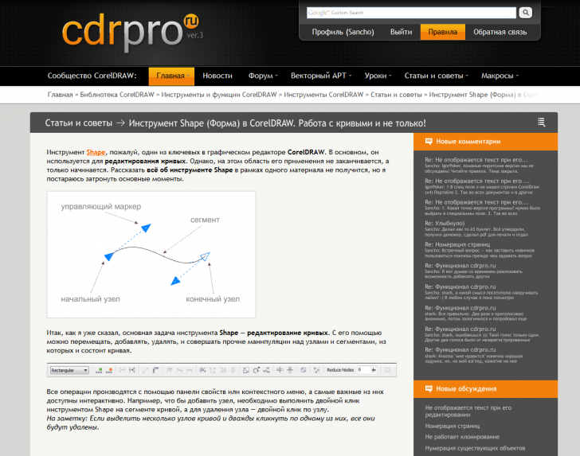

Дизайн и вёрстка cdrpro.ru
Sancho / 19.02.2010, 00:19/15:26
С недавних пор меня смущает текущий дизайн, да и вёрстка тоже, этого сайта. Я хочу сделать ре-дизайн. Есть ли какие то идеи или замечания? было бы весьма кстати. Хотелось бы услышать мысли как постоянных участников, так и вновь прибывших.
Хай народ! Начал рисовать вид нового профиля и что то увлёкся. Вот пара скринов как хочу переделать оформление сайта:

Собственно интересует мнение что нра/не нра, и почему )))
Кстати вопрос в догонку :) Есть мысль сделать два изображения для профиля:
1. фотография (показывается только в профиле)
2. аватар (показывается только в сообщениях)
Если в этом смысл? будите ли вы добавлять свои фотограйии? Другие мнения...
А почему бы и нет? Мне мысль с фото нравится. Мне также нравится, как реализовано на rudtp.ru. Там указывается под аватаром, сколько времени человек на сайте, город, ну и т. д. Ты, Sancho, в курсе... Хотя тебе видней, стоит это делать или нет.
Очень стильно!!! Сайт.
На счет двух фотографий, точно нет.
Почему? :)
Скорей всего, в том числе и я, большинство решат поставить одну и туже аватарку в двух местах (или оставить вторую пустым). Исключения те, кому все равно, что у них там стоит и те, кому нравиться каждую неделю менять свой аватар.
Фотографии, возможность добавлять в друзья... Как-то это все начинает на социальные сети смахивать :)
shark, причём тут социальные сети? У большинства крупных форумов есть такие возможности, и даже больше. Хочешь — пользуйся, а не хочешь — ни кто не заставляет.
Мне дизайн нравится. Особенно профиль. Все четко, наглядно, разложено по полочкам.
Насчет фото... А почему бы и нет? Это же добровольно. Кто не хочет, не ставит или продублирует аватором...
Страницы